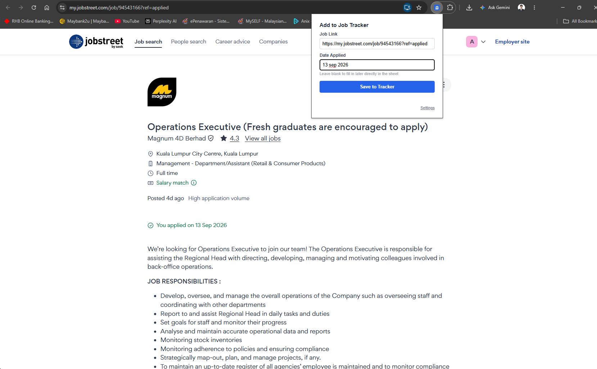
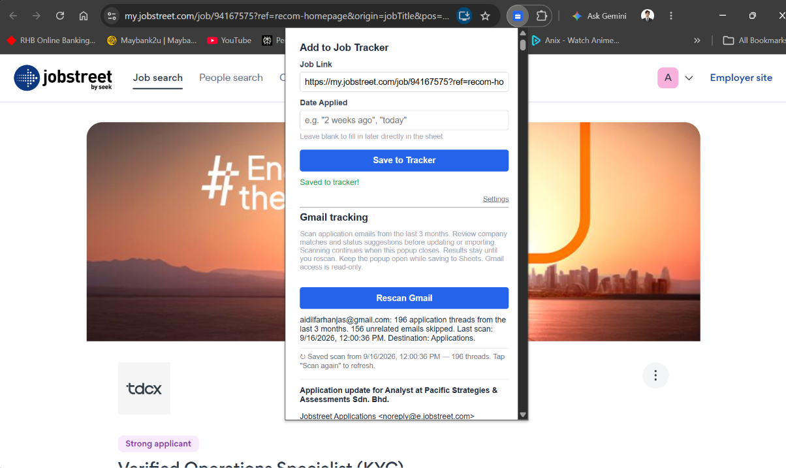
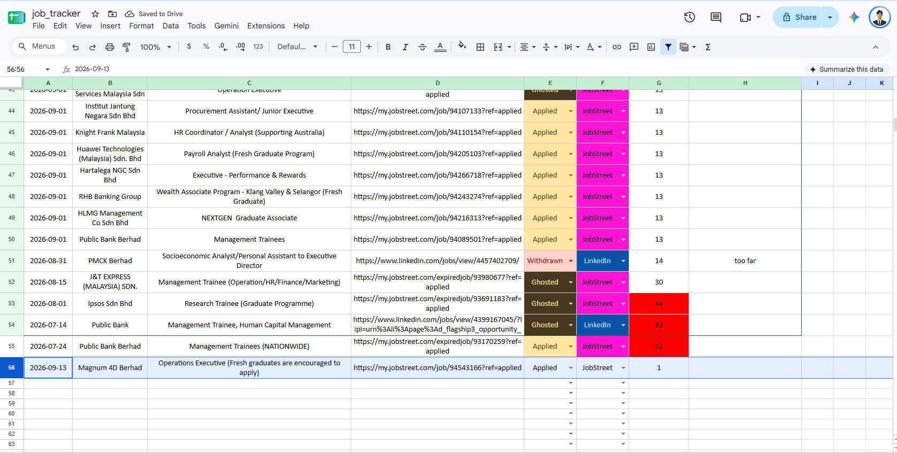
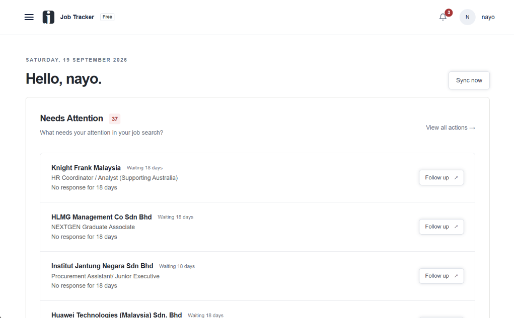

Chrome extension
Save a job posting straight into your own Google Sheet.
Job Tracker Quick Add helps you capture an application while the job page is open, so your job search stays organised.
Get the extensionA simple guide
How to use this extension?
Set up your own Google Sheet once, then save job postings as you browse.
-
Add to Chrome
Open Job Tracker Quick Add in the Chrome Web Store and click Add to Chrome. Pin the extension from Chrome's Extensions menu so it is easy to find.
-
Connect your own spreadsheet
Make sure you have your own Google Sheet. Copy its link, then open the extension and click Settings. Paste the part of the link between /d/ and /edit into Google Sheet ID.
Where to find your Sheet ID:
docs.google.com/spreadsheets/d/YOUR_SHEET_ID/editConnect your Google account when prompted, choose the spreadsheet tab for your applications, and click Save Settings.
-
Open a job posting
Go to LinkedIn, JobStreet, or Indeed and open the job posting you want to track. Stay on the individual job page so the extension can capture its link.
-
Click the extension
Click the Job Tracker Quick Add icon in your Chrome toolbar. Check the job link and enter your application date, or leave it blank to fill in later in your sheet.

Open the extension while viewing the job you want to save. Click the image to enlarge. -
Click Save to Tracker
Click Save to Tracker and wait for the Saved to tracker! message. Open your Google Sheet to see the new entry.

The confirmation message lets you know your job has been saved. 
Your saved application appears as a new row in your own Google Sheet. See all your applications in the Job Tracker web app. It reminds you to follow up, drafts emails, and shows your analytics.

Your applications and follow-up reminders live in the web app dashboard.
Your data, your control
Built to work directly with your Google account.
The extension does not operate a developer server. Job details are sent directly from your browser to the Google Sheet you select, using your Google account permission. Optional Gmail scanning is only started when you choose it.